Les os
Touche un os pour l'ouvrir en 3D et le tourner au doigt. 1 sur 25 sont déjà redessinés d'après l'atlas de Gray.
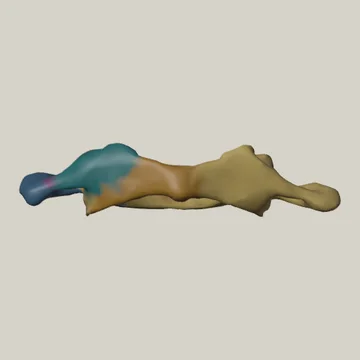
Atlas (C1)Version d'août, pas encore refaite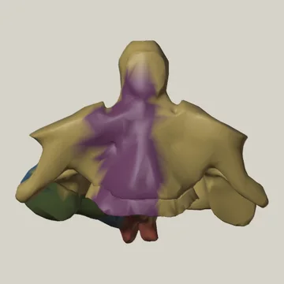
Axis (C2)Version d'août, pas encore refaite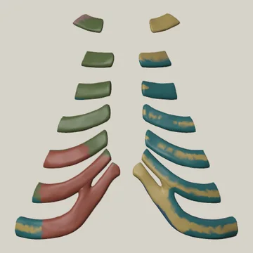
Cartilages costauxVersion d'août, pas encore refaite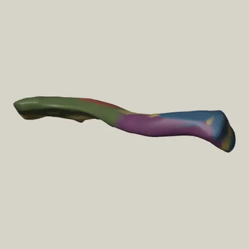
ClaviculeVersion d'août, pas encore refaite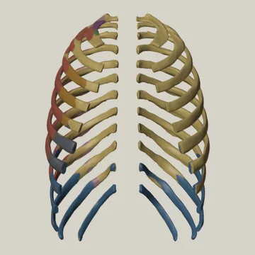
CôtesVersion d'août, pas encore refaite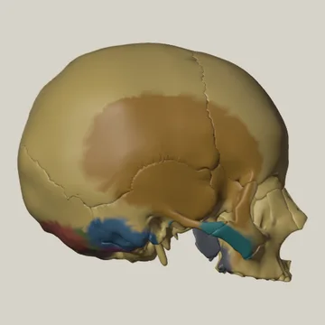
CrâneVersion d'août, pas encore refaite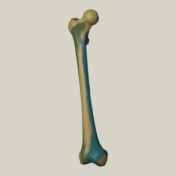
FémurVersion d'août, pas encore refaite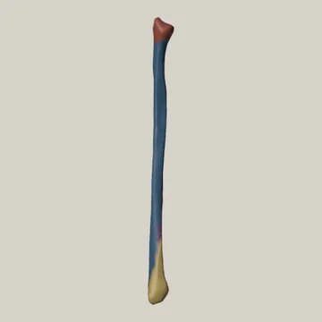
Fibulaautrefois : péronéVersion d'août, pas encore refaite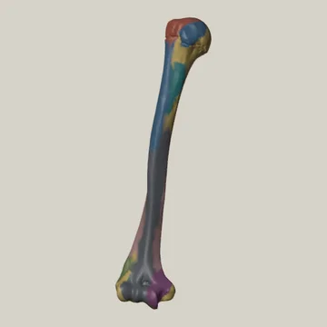
HumérusVersion d'août, pas encore refaite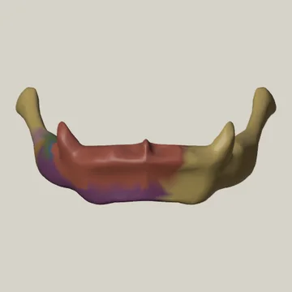
Os hyoïdeVersion d'août, pas encore refaite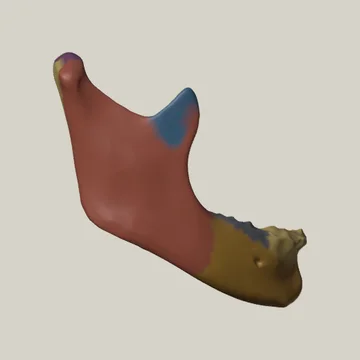
Mandibuleautrefois : maxillaire inférieurVersion d'août, pas encore refaite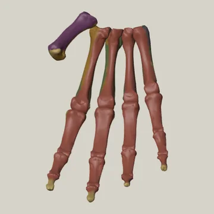
Métacarpiens et phalanges de la mainVersion d'août, pas encore refaite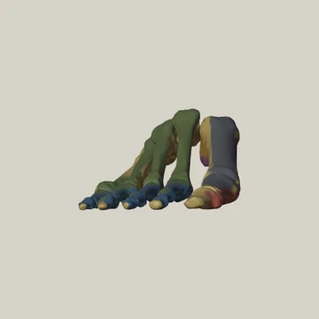
Métatarsiens et phalanges du piedVersion d'août, pas encore refaite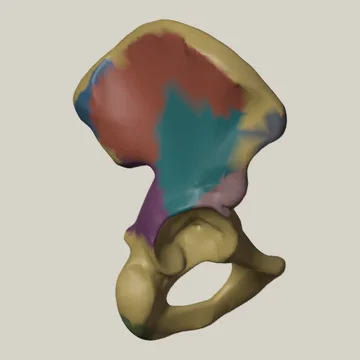
Os coxalautrefois : os iliaqueVersion d'août, pas encore refaite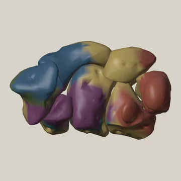
Os du carpeVersion d'août, pas encore refaite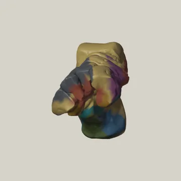
Os du tarseVersion d'août, pas encore refaite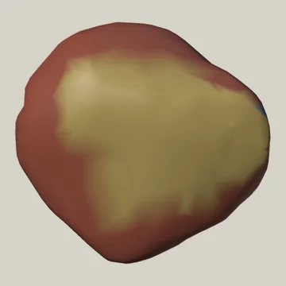
Patellaautrefois : rotuleVersion d'août, pas encore refaite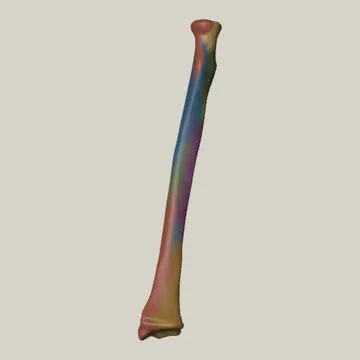
RadiusVersion d'août, pas encore refaite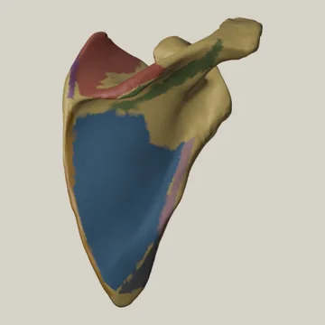
Scapulaautrefois : omoplateRedessiné d'après l'atlas de Gray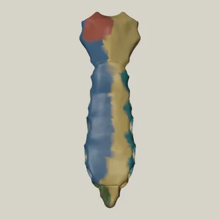
SternumVersion d'août, pas encore refaite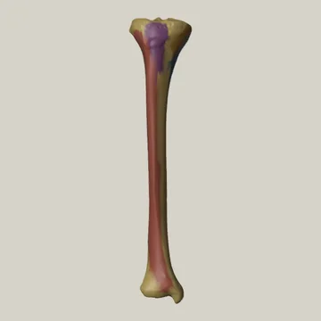
TibiaVersion d'août, pas encore refaite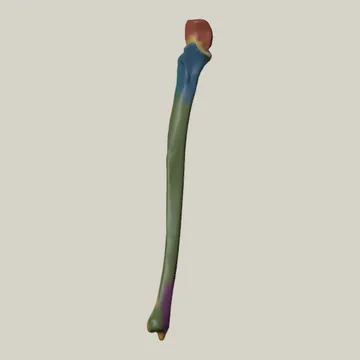
Ulnaautrefois : cubitusVersion d'août, pas encore refaite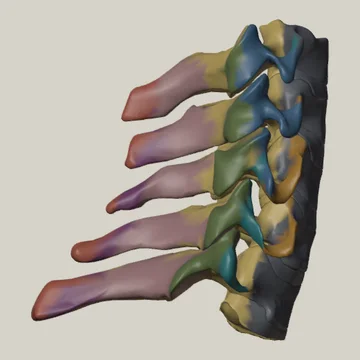
Vertèbres cervicales (C3 à C7)Version d'août, pas encore refaite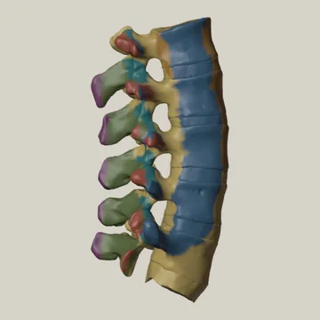
Vertèbres lombaires (L1 à L5)Version d'août, pas encore refaite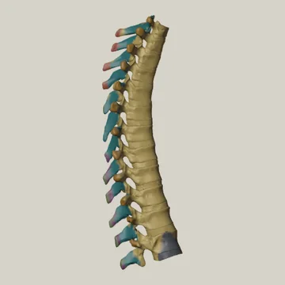
Vertèbres thoraciques (T1 à T12)autrefois : vertèbres dorsalesVersion d'août, pas encore refaite